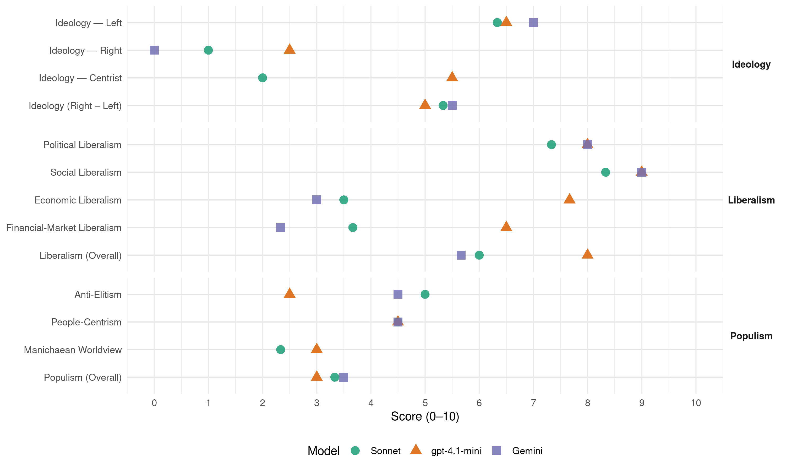

GL (Netherlands, 1994)
manifesto_id 22110_199405
Get full text: This site shows derived annotations and short verbatim quotes only. The full manifesto text is © Manifesto Project / WZB — obtain it via manifesto-project.wzb.eu using the manifesto_id above.
Headline scores
| Dimension | Sonnet | gpt-4.1-mini | Gemini |
|---|---|---|---|
| Populism (Overall) | 3.3 | 3.0 | 3.5 |
| Anti-Elitism | 5.0 | 2.5 | 4.5 |
| People-Centrism | 4.5 | 4.5 | 4.5 |
| Manichaean Worldview | 2.3 | 3.0 | – |
| Ideology (Right − Left) | 5.3 | 5.0 | 5.5 |
| Liberalism (Overall) | 6.0 | 8.0 | 5.7 |
| Political Liberalism | 7.3 | 8.0 | 8.0 |
| Social Liberalism | 8.3 | 9.0 | 9.0 |
| Economic Liberalism | 3.5 | 7.7 | 3.0 |
| Financial-Market Liberalism | 3.7 | 6.5 | 2.3 |
Evidence per dimension
Economic Liberalism
Gemini · score 4.0 · verified · chunk 1
“ingrijpen in de werking van de markt”
heeft de meeste kans van slagen door in te grijpen in de werking van de markt.
Gemini · score 3.0 · verified · chunk 2
“corrigeren van de vrije werking van het marktmechanisme”
hetzij door de overheid. Het corrigeren van de vrije werking van het marktmechanisme heeft in het verleden zijn dienst bewezen
Gemini · score 2.0 · verified · chunk 3
“een minimumnorm voor de vennootschapsbelasting”
vennootschapsbelasting verdwijnt een aantal aftrekposten en vrijstellingen. Er komt een minimumnorm voor de vennootschapsbelasting in EU-verband van
gpt-4.1-mini · score 8.0 · verified · chunk 1
“marktconforme prikkels kunnen producenten en consumenten worden aangespoord”
…Door ‘marktconforme prikkels’ kunnen producenten en consumenten worden aangespoord tot het nemen van andere beslissingen en tot het ontplooien van ander gedrag…
gpt-4.1-mini · score 8.0 · verified · chunk 2
“marktmechanisme, belastingstelsel, lastenverschuiving”
…De overheid beïnvloedt tevens de inkomensverhoudingen. De verschillen in inkomens in ons land zijn, ondanks het feit dat zij vergeleken met de meeste andere landen beperkt zijn, nog altijd te groot. De partij kiest voor inkomensnivellering, waarbij mensen met hogere inkomens (boven de ziekenfondsgrens) inleveren ten gunste van mensen met lagere inkomens (onder modaal). De hervorming van het belastingstelsel is daarbij een goed middel. Door een lastenverschuiving tot stand te brengen van arbeid naar kapitaal en milieu kan de arbeid een stuk goedkoper gemaakt worden.
gpt-4.1-mini · score 7.0 · verified · chunk 3
“Het huidige belastingstelsel is dringend aan herziening toe”
…3. Herziening van het belasting- en premiestelsel 71 Het huidige belastingstelsel is dringend aan herziening toe. De herziening moet een vierledig doel dienen: sturing van productie en consumptie in meer duurzame richting, individualisering en vereenvoudiging van het stelsel, herverdeling van rijkdom.
Sonnet · score 5.0 · mixed · chunk 1
“marktconforme prikkels”
Door ‘marktconforme prikkels’ kunnen producenten en consumenten worden aangespoord tot het nemen van andere beslissingen
Sonnet · score 4.0 · verified · chunk 2
“marktmechanisme niet functioneert zoals zou moeten”
Een belangrijke reden waarom het marktmechanisme niet functioneert zoals zou moeten, is dat beslissers niet alle kosten en baten van hun acties meetellen.
Sonnet · score 3.0 · verified · chunk 3
“verregaande liberalisatie- en harmonisatiepolitiek”
De nota-Heerma gaf de stoot tot een verregaande liberalisatie- en harmonisatiepolitiek. Met steun van de hele Tweede Kamer, uitgezonderd Groenlinks, werden volkshuisvesting en stadsvernieuwing niet langer een sociaal recht maar een bezuinigingsobject.
Financial-Market Liberalism
Gemini · score 3.0 · verified · chunk 1
“toekomstige Europese Centrale Bank wordt op afstand democratisch gecontroleerd”
Europese bank 9. De toekomstige Europese Centrale Bank wordt op afstand democratisch gecontroleerd.
Gemini · score 2.0 · verified · chunk 2
“financiële markten behoeven een zekere politieke regulering”
regulering financiële markten 3. De financiële markten behoeven een zekere politieke regulering. Grote instabiliteit op de valutamarkten wordt
Gemini · score 2.0 · verified · chunk 3
“bestemming van het beleggingskapitaal van de pensioenfondsen”
ontwikkelingsbank’ uitgebreid via een wettelijke beschikking over de bestemming van het beleggingskapitaal van de pensioenfondsen. Deze fondsen dragen
gpt-4.1-mini · score 7.0 · verified · chunk 1
“het fonds voor duurzame ontwikkeling wordt gevuld via particuliere beleggingen”
…Het fonds wordt gevuld via particuliere beleggingen (deelnemingen en eco-obligaties) en door bijdragen van de overheid en derden…
gpt-4.1-mini · score 6.0 · verified · chunk 2
“regulering financiële markten, belastingen op aandelen”
…De financiële markten behoeven een zekere politieke regulering. Grote instabiliteit op de valutamarkten wordt voorkomen. Om het functioneren van de effectenbeurs als een soort casino af te remmen en de samenleving te beschermen tegen economische instabiliteit worden de belastingen op de aan- en verkoop van aandelen, obligaties, opties, termijncontracten en valuta verhoogd.
Sonnet · score 5.0 · verified · chunk 1
“samenwerking tussen overheid en financiële wereld”
Dit is een samenwerking tussen overheid en financiële wereld. Het fonds staat garant voor leningen of verstrekt leningen om milieuvriendelijke ontwikkelingen te stimuleren.
Sonnet · score 3.0 · verified · chunk 2
“belastingen op de aan- en verkoop van aandelen”
worden de belastingen op de aan- en verkoop van aandelen, obligaties, opties, termijncontracten en valuta verhoogd. Dit vindt plaats door de provisies te verhogen met het door de staat te innen bedrag.
Sonnet · score 3.0 · verified · chunk 3
“beleggingskapitaal van de pensioenfondsen”
Zo nodig wordt het investeringskapitaal van de ‘duurzame ontwikkelingsbank’ uitgebreid via een wettelijke beschikking over de bestemming van het beleggingskapitaal van de pensioenfondsen.
Political Liberalism
Gemini · score 8.0 · verified · chunk 1
“versterkt ook het democratisch karakter”
recht doet aan hun emancipatie en versterkt ook het democratisch karakter van de samenleving.
Gemini · score 8.0 · verified · chunk 2
“legitimiteit van de democratie”
samenhang in te samenleving, en daarmee de legitimiteit van de democratie, te versterken. Het stelsel dient bovendien
Gemini · score 8.0 · verified · chunk 3
“Ondanks het feit dat dringende behoefte is aan een fundamentele democratisering”
1. De parlementaire democratie Ondanks het feit dat dringende behoefte is aan een fundamentele democratisering van het politiek systeem, is er geen noodzaak
gpt-4.1-mini · score 8.0 · verified · chunk 1
“verdieping van de democratie en vergroting van de participatie van de burgers”
…Verdieping van de democratie en vergroting van de participatie van de burgers in alle belangrijke levenssferen zijn daar niet alleen de voorwaarden voor, zij houden op zichzelf al een verbetering van de kwaliteit van het bestaan in…
gpt-4.1-mini · score 8.0 · verified · chunk 2
“democratie, rechten, verkiezingen, parlement”
…wordt gewaarborgd. De AWBZ wordt uitgebouwd tot een algemeen geldende basisverzekering, waar deze voorzieningen in opgenomen zijn. Een zo groot mogelijk deel van de premies is inkomensafhankelijk en eigen betalingen worden vermeden. In de basisverzekering zijn de meest gerenommeerde alternatieve geneeswijzen opgenomen. De positie van de democratie, rechten, verkiezingen, parlement en onafhankelijke klachtenregelingen wordt versterkt.
gpt-4.1-mini · score 8.0 · verified · chunk 3
“Het referendum gaat tot de standaarduitrusting van ons staatsrecht behoren”
…correctief referendum 2. Het referendum gaat tot de standaarduitrusting van ons staatsrecht behoren. Het geeft de kiezers bij belangrijke kwesties meer directe invloed. Zo’n referendum is beslissend en corrigeert wetgeving achteraf.
Sonnet · score 8.0 · verified · chunk 1
“verdieping van de democratie”
van de leidende gedachten achter dit programma is dan ook het streven naar verdieping van de democratie. De wissel moet om van de vaak formele
Sonnet · score 6.0 · verified · chunk 2
“legitimiteit van de democratie, te versterken”
Solidariteit van de midden- en hoge inkomensgroepen met de lage inkomensgroepen is nodig om de samenhang in de samenleving, en daarmee de legitimiteit van de democratie, te versterken.
Sonnet · score 8.0 · verified · chunk 3
“stelsel van evenredige vertegenwoordiging zonder kiesdrempel”
Het uitgangspunt moet een stelsel van evenredige vertegenwoordiging zonder kiesdrempel blijven. Dit biedt in beginsel de beste mogelijkheden voor een goede politieke afspiegeling van wat in de maatschappij leeft.
Liberalism (Overall)
Gemini · score 6.0 · verified · chunk 1
“versterkt ook het democratisch karakter”
recht doet aan hun emancipatie en versterkt ook het democratisch karakter van de samenleving.
Gemini · score 6.0 · verified · chunk 2
“corrigeren van de vrije werking van het marktmechanisme”
hetzij door de overheid. Het corrigeren van de vrije werking van het marktmechanisme heeft in het verleden zijn dienst bewezen
Gemini · score 5.0 · verified · chunk 3
“Ondanks het feit dat dringende behoefte is aan een fundamentele democratisering”
1. De parlementaire democratie Ondanks het feit dat dringende behoefte is aan een fundamentele democratisering van het politiek systeem, is er geen noodzaak
gpt-4.1-mini · score 8.0 · verified · chunk 1
“verdieping van de democratie en vergroting van de participatie van de burgers”
…Verdieping van de democratie en vergroting van de participatie van de burgers in alle belangrijke levenssferen zijn daar niet alleen de voorwaarden voor, zij houden op zichzelf al een verbetering van de kwaliteit van het bestaan in…
gpt-4.1-mini · score 8.0 · verified · chunk 2
“belastingstelsel, lastenverschuiving, democratie, rechten”
…De hervorming van het belastingstelsel is daarbij een goed middel. Door een lastenverschuiving tot stand te brengen van arbeid naar kapitaal en milieu kan de arbeid een stuk goedkoper gemaakt worden. De positie van de democratie, rechten, verkiezingen, parlement en onafhankelijke klachtenregelingen wordt versterkt.
gpt-4.1-mini · score 8.0 · verified · chunk 3
“Het referendum gaat tot de standaarduitrusting van ons staatsrecht behoren”
…correctief referendum 2. Het referendum gaat tot de standaarduitrusting van ons staatsrecht behoren. Het geeft de kiezers bij belangrijke kwesties meer directe invloed. Zo’n referendum is beslissend en corrigeert wetgeving achteraf.
Sonnet · score 7.0 · verified · chunk 1
“verdieping van de democratie”
het streven naar verdieping van de democratie. De wissel moet om van de vaak formele en indirecte vorm van politieke democratie
Sonnet · score 5.0 · verified · chunk 2
“Correctie daarop is noodzakelijk”
Het prijs- of marktmechanisme vervult een belangrijke functie in de economie. Maar het leidt nooit tot ideale omstandigheden. Correctie daarop is noodzakelijk hetzij door werkgevers, hetzij door werknemers of consumenten, hetzij door de overheid.
Sonnet · score 6.0 · verified · chunk 3
“democratische rechtsstaat”
De mate waarin iedere inwoner van Nederland gebruik kan maken van zijn rechten als staatsburger is essentieel voor het functioneren van onze democratische rechtsstaat.
Anti-Elitism
Gemini · score 6.0 · verified · chunk 1
“de macht van de zittende politieke elites”
bereidheid om de macht van de zittende politieke elites, inclusief Groenlinks zelf, te verminderen.
Gemini · score 3.0 · verified · chunk 3
“bevestigen het beeld van een gesloten politieke cultuur”
reacties daarop van de meeste politieke partijen bevestigen het beeld van een gesloten politieke cultuur. Hierdoor neemt de
gpt-4.1-mini · score 3.0 · verified · chunk 1
“de macht van de zittende politieke elites, inclusief Groenlinks zelf, te verminderen”
…de bereidheid om de macht van de zittende politieke elites, inclusief Groenlinks zelf, te verminderen. Het is deze open houding die alle Groen Links vertegenwoordigers…
gpt-4.1-mini · score 2.0 · verified · chunk 3
“afkeer van de politiek kan een klimaat scheppen waarin grotere groepen kiezers proteststemmen uitbrengen op extreemrechtse partijen”
…vertrouwen en legitimiteit inboeten. Afkeer van de politiek kan een klimaat scheppen waarin grotere groepen kiezers proteststemmen uitbrengen op extreemrechtse partijen met onfrisse ideeën In Nederland loopt dat gelukkig zo’n vaart (nog) niet, maar in andere Europese landen neemt het soms verontrustende vormen aan. En ook bij ons kan het de verkeerde kant opgaan. De oorzaak van de toenemende kritiek op de werkwijze en inrichting van de parlementaire democratie is gelegen in veranderingen in de samenleving. Vaak gaat het om op zich positieve ontwikkelingen. Te denken valt aan het wegvallen van de vanzelfsprekende partijbindingen uit de tijd van de verzuiling, de toegenomen individualisering en het mondiger worden van de burger. Deze ontwikkelingen kunnen ook opgevat worden als uitdagingen die vragen om een eigentijdse en meer democratische invulling van burgerschap.
Sonnet · score 4.0 · mixed · chunk 1
“macht van de zittende politieke elites”
de bereidheid om de macht van de zittende politieke elites, inclusief Groenlinks zelf, te verminderen. Het is deze open houding
Sonnet · score 3.0 · mixed · chunk 2
“onvoorwaardelijke omarming van het marktmechanisme”
Met de onvoorwaardelijke omarming van het marktmechanisme en de ‘nieuwe zakelijkheid’ wordt sociale ongelijkheid als onvermijdelijk op de koop toe genomen.
Sonnet · score 5.0 · verified · chunk 3
“gesloten politieke cultuur”
Zowel de rapporten als de reacties daarop van de meeste politieke partijen bevestigen het beeld van een gesloten politieke cultuur. Hierdoor neemt de vervreemding van het politieke bedrijf bij de burgers nog verder toe.
Ideology — Centrist
gpt-4.1-mini · score 6.0 · verified · chunk 1
“de inzet voor een democratie waarin burgers meer dan nu mogelijkheden hebben”
…De inzet voor een democratie waarin burgers meer dan nu mogelijkheden hebben om hun invloed te doen gelden en betrokken te zijn bij belangrijke beslissingen die hen raken…
gpt-4.1-mini · score 5.0 · verified · chunk 3
“Burgers moeten meer directe invloed op de democratische besluitvorming uitoefenen en de kans krijgen om volksvertegenwoordigers persoonlijk te kiezen”
…burgerschap. Burgers moeten meer directe invloed op de democratische besluitvorming uitoefenen en de kans krijgen om volksvertegenwoordigers persoonlijk te kiezen. Meteen na de vorige Kamerverkiezingen werd besloten om nieuwe plannen te laten bedenken voor staatkundige vernieuwing.
Sonnet · score 2.0 · verified · chunk 1
“De politiek zit inmiddels niet meer hoog”
De politiek zit inmiddels niet meer hoog op de troon. Zij wordt gedwongen haar aloude monopolie op te geven
Sonnet · score 2.0 · verified · chunk 3
“burgers meer directe invloed”
Burgers moeten meer directe invloed op de democratische besluitvorming uitoefenen en de kans krijgen om volksvertegenwoordigers persoonlijk te kiezen.
Ideology — Left
Gemini · score 7.0 · verified · chunk 1
“verschuiven van lasten van arbeid naar kapitaal”
het idee van lastenverschuiving: het verschuiven van lasten van arbeid naar kapitaal en grondstoffen.
Gemini · score 7.0 · verified · chunk 3
“herverdeling van rijkdom”
sturing van productie en consumptie in meer duurzame richting, individualisering en vereenvoudiging van het stelsel, herverdeling van rijkdom.
gpt-4.1-mini · score 7.0 · verified · chunk 1
“voor een sociaal-ecologische politiek, en is met concrete voorstellen gekomen”
…Groenlinks heeft zich de afgelopen jaren sterk gemaakt voor een sociaal-ecologische politiek, en is met concrete voorstellen gekomen. Voor vormen van groentax, zoals de energieheffing, en voor de ecologisering van de BTW…
gpt-4.1-mini · score 6.0 · verified · chunk 3
“Om de inkomenspositie van de laagste inkomens te verbeteren wordt een solidariteitsheffing ingevoerd”
…verdeling 72 8. Om de inkomenspositie van de laagste inkomens te verbeteren wordt een solidariteitsheffing ingevoerd in de vorm van een verhoging van de tweede en derde schijf in de loon- en inkomstenbelasting. 9. De aftrek van hypotheekrente wordt beperkt tot een hypotheekbedrag van maximaal fl. 180.000,-. Deze renteaftrek wordt zo geregeld dat voor iedereen hetzelfde percentage belastingvoordeel resulteert, te weten: het tarief van de eerste schijf.
Sonnet · score 6.0 · verified · chunk 1
“eerlijker verdeling van de welvaart”
Politiek uitgangspunt is een eerlijker verdeling van de welvaart in de wereld. Veel problemen hangen immers samen met economische ongelijkheid.
Sonnet · score 6.0 · verified · chunk 2
“inkomensnivellering, waarbij mensen met hogere inkomens”
De partij kiest voor inkomensnivellering, waarbij mensen met hogere inkomens (boven de ziekenfondsgrens) inleveren ten gunste van mensen met lagere inkomens (onder modaal).
Sonnet · score 7.0 · verified · chunk 3
“factor kapitaal wordt ‘uitgekocht’ door de factor arbeid”
Er wordt een start gemaakt met het in Zweden ontwikkelde systeem van werknemersfondsen, waardoor op langere termijn de factor kapitaal wordt ‘uitgekocht’ door de factor arbeid.
Ideology (Right − Left)
Gemini · score 5.0 · verified · chunk 1
“verschuiven van lasten van arbeid naar kapitaal”
het idee van lastenverschuiving: het verschuiven van lasten van arbeid naar kapitaal en grondstoffen.
Gemini · score 6.0 · verified · chunk 3
“herverdeling van rijkdom”
sturing van productie en consumptie in meer duurzame richting, individualisering en vereenvoudiging van het stelsel, herverdeling van rijkdom.
gpt-4.1-mini · score 5.0 · verified · chunk 1
“de bereidheid om de macht van de zittende politieke elites, inclusief Groenlinks zelf, te verminderen”
…de bereidheid om de macht van de zittende politieke elites, inclusief Groenlinks zelf, te verminderen. Het is deze open houding die alle Groen Links vertegenwoordigers, of het nu in de gemeenten of in Den Haag en Brussel is, gemeen hebben…
gpt-4.1-mini · score 5.0 · verified · chunk 3
“Burgers moeten meer directe invloed op de democratische besluitvorming uitoefenen”
…burgerschap. Burgers moeten meer directe invloed op de democratische besluitvorming uitoefenen en de kans krijgen om volksvertegenwoordigers persoonlijk te kiezen. Meteen na de vorige Kamerverkiezingen werd besloten om nieuwe plannen te laten bedenken voor staatkundige vernieuwing.
Sonnet · score 5.0 · verified · chunk 1
“sociaal-ecologische politiek”
Groenlinks heeft zich de afgelopen jaren sterk gemaakt voor een sociaal-ecologische politiek, en is met concrete voorstellen gekomen.
Sonnet · score 5.0 · verified · chunk 2
“herverdeling van rijkdom”
De herziening moet een vierledig doel dienen: sturing van productie en consumptie in meer duurzame richting, individualisering en vereenvoudiging van het stelsel, herverdeling van rijkdom.
Sonnet · score 6.0 · verified · chunk 3
“herverdeling van rijkdom”
De herziening moet een vierledig doel dienen: sturing van productie en consumptie in meer duurzame richting, individualisering en vereenvoudiging van het stelsel, herverdeling van rijkdom.
Ideology — Right
Gemini · score 0.0 · verified · chunk 1
“versterking van de multiculturele samenleving”
behoud van tolerantie ligt in een verdere versterking van de multiculturele samenleving.
gpt-4.1-mini · score 2.0 · verified · chunk 1
“toenemende vreemdelingenhaat en ontsporend nationalisme”
…Bedreigende ontwikkelingen als milieuvernietiging, vormen van tweedeling op nationale en internationale schaal, toenemende vreemdelingenhaat en ontsporend nationalisme…
gpt-4.1-mini · score 3.0 · verified · chunk 3
“Democratische partijen ondernemen gezamenlijk actie tegen partijen die zich schuldig maken aan een antidemocratische opstelling of aanzetten tot racisme of buitenlanderhaat”
…democratische gedragscode 5. Alle democratische partijen ondernemen gezamenlijk actie tegen partijen die zich schuldig maken aan een antidemocratische opstelling of aanzetten tot racisme of buitenlanderhaat. Een belangrijk instrument is een nog in te stellen politieke gedragscode.
Sonnet · score 1.0 · verified · chunk 1
“toenemende vreemdelingenhaat en ontsporend nationalisme”
Bedreigende ontwikkelingen als milieuvernietiging, vormen van tweedeling op nationale en internationale schaal, toenemende vreemdelingenhaat en ontsporend nationalisme.
Sonnet · score 1.0 · verified · chunk 3
“extreemrechtse partijen met onfrisse ideeën”
Afkeer van de politiek kan een klimaat scheppen waarin grotere groepen kiezers proteststemmen uitbrengen op extreemrechtse partijen met onfrisse ideeën
Manichaean Worldview
gpt-4.1-mini · score 4.0 · verified · chunk 1
“de dreiging van een allesverwoestende kernoorlog sinds enkele jaren verminderd”
…Hoewel misbruik van atoomwapens mogelijk blijft, is de dreiging van een allesverwoestende kernoorlog sinds enkele jaren verminderd. Ook zijn mensenrechten en democratie meer in het brandpunt…
gpt-4.1-mini · score 2.0 · verified · chunk 3
“afkeer van de politiek kan een klimaat scheppen waarin grotere groepen kiezers proteststemmen uitbrengen op extreemrechtse partijen met onfrisse ideeën”
…vertrouwen en legitimiteit inboeten. Afkeer van de politiek kan een klimaat scheppen waarin grotere groepen kiezers proteststemmen uitbrengen op extreemrechtse partijen met onfrisse ideeën In Nederland loopt dat gelukkig zo’n vaart (nog) niet, maar in andere Europese landen neemt het soms verontrustende vormen aan. En ook bij ons kan het de verkeerde kant opgaan. De oorzaak van de toenemende kritiek op de werkwijze en inrichting van de parlementaire democratie is gelegen in veranderingen in de samenleving.
Sonnet · score 2.0 · verified · chunk 1
“stilstand of verandering”
En het maakt verschil voor welke partijen en opvattingen gekozen wordt. Voor stilstand of verandering. Groenlinks of laten we het zo?
Sonnet · score 2.0 · verified · chunk 2
“kloof tussen de ‘haves’ en de ‘have-nots’”
dat de kloof tussen de ‘haves’ en de ‘have-nots’ steeds groter wordt, en dat het aantal mensen dat onvoldoende mogelijkheden heeft om volwaardig aan de samenleving deel te nemen gestaag groeit.
Sonnet · score 3.0 · verified · chunk 3
“samenleving van winnaars en verliezers”
Voor alles wenst Groenlinks een samenhangende samenleving waarin iedereen mee kan doen, geen samenleving van winnaars en verliezers, van koplopers en achterblijvers.
People-Centrism
Gemini · score 5.0 · verified · chunk 1
“in handen van burgers komen”
het initiatief tot verandering in handen van burgers komen. Dat verbetert de kwaliteit
Gemini · score 4.0 · verified · chunk 3
“De burgers staan centraal, niet de instituties”
keuzevrijheid, zelfontplooiing, zeggenschap en toegankelijkheid zijn dan ook sleutelbegrippen. De burgers staan centraal, niet de instituties of het beleid.
gpt-4.1-mini · score 6.0 · verified · chunk 1
“de inzet voor een democratie waarin burgers meer dan nu mogelijkheden hebben”
…De inzet voor een democratie waarin burgers meer dan nu mogelijkheden hebben om hun invloed te doen gelden en betrokken te zijn bij belangrijke beslissingen die hen raken…
gpt-4.1-mini · score 3.0 · verified · chunk 3
“Burgers moeten meer directe invloed op de democratische besluitvorming uitoefenen”
…burgerschap. Burgers moeten meer directe invloed op de democratische besluitvorming uitoefenen en de kans krijgen om volksvertegenwoordigers persoonlijk te kiezen. Meteen na de vorige Kamerverkiezingen werd besloten om nieuwe plannen te laten bedenken voor staatkundige vernieuwing. De schrik door de lage opkomst zat er goed in. In de rapporten van de zogeheten commissie-Deetman, die in de tweede helft van 1993 werden uitgebracht, is een serie voorstellen over ‘politieke vernieuwing’ gedaan.
Sonnet · score 5.0 · mixed · chunk 1
“burgers meer dan nu mogelijkheden hebben”
inzet voor een democratie waarin burgers meer dan nu mogelijkheden hebben om hun invloed te doen gelden en betrokken te zijn
Sonnet · score 4.0 · verified · chunk 2
“burgers een grote mate van zeggenschap”
zodat burgers een grote mate van zeggenschap krijgen over de inhoud van de aangeboden zorg en de manier waarop zij daarvan gebruik wensen te maken.
Sonnet · score 5.0 · verified · chunk 3
“De burgers staan centraal”
Variatie, keuzevrijheid, zelfontplooiing, zeggenschap en toegankelijkheid zijn dan ook sleutelbegrippen. De burgers staan centraal, niet de instituties of het beleid.
Populism (Overall)
Gemini · score 4.0 · verified · chunk 1
“de macht van de zittende politieke elites”
bereidheid om de macht van de zittende politieke elites, inclusief Groenlinks zelf, te verminderen.
Gemini · score 3.0 · verified · chunk 3
“bevestigen het beeld van een gesloten politieke cultuur”
reacties daarop van de meeste politieke partijen bevestigen het beeld van een gesloten politieke cultuur. Hierdoor neemt de
gpt-4.1-mini · score 4.0 · verified · chunk 1
“de bereidheid om de macht van de zittende politieke elites, inclusief Groenlinks zelf, te verminderen”
…de bereidheid om de macht van de zittende politieke elites, inclusief Groenlinks zelf, te verminderen. Het is deze open houding die alle Groen Links vertegenwoordigers, of het nu in de gemeenten of in Den Haag en Brussel is, gemeen hebben…
gpt-4.1-mini · score 2.0 · verified · chunk 3
“Afkeer van de politiek kan een klimaat scheppen waarin grotere groepen kiezers proteststemmen uitbrengen op extreemrechtse partijen”
…vertrouwen en legitimiteit inboeten. Afkeer van de politiek kan een klimaat scheppen waarin grotere groepen kiezers proteststemmen uitbrengen op extreemrechtse partijen met onfrisse ideeën In Nederland loopt dat gelukkig zo’n vaart (nog) niet, maar in andere Europese landen neemt het soms verontrustende vormen aan. En ook bij ons kan het de verkeerde kant opgaan. De oorzaak van de toenemende kritiek op de werkwijze en inrichting van de parlementaire democratie is gelegen in veranderingen in de samenleving. Vaak gaat het om op zich positieve ontwikkelingen. Te denken valt aan het wegvallen van de vanzelfsprekende partijbindingen uit de tijd van de verzuiling, de toegenomen individualisering en het mondiger worden van de burger. Deze ontwikkelingen kunnen ook opgevat worden als uitdagingen die vragen om een eigentijdse en meer democratische invulling van burgerschap.
Sonnet · score 3.0 · verified · chunk 1
“macht van de zittende politieke elites”
de bereidheid om de macht van de zittende politieke elites, inclusief Groenlinks zelf, te verminderen.
Sonnet · score 3.0 · verified · chunk 2
“sociale ongelijkheid als onvermijdelijk”
Met de onvoorwaardelijke omarming van het marktmechanisme en de ‘nieuwe zakelijkheid’ wordt sociale ongelijkheid als onvermijdelijk op de koop toe genomen.
Sonnet · score 4.0 · verified · chunk 3
“kloof tussen datgene wat politici beloven”
Te vaak gaapt er een kloof tussen datgene wat politici beloven en wat ze uiteindelijk doen of kunnen doen.
Social Liberalism